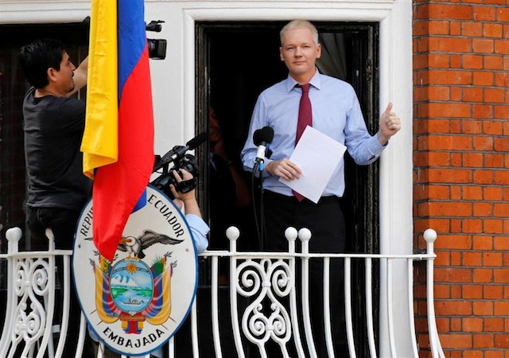
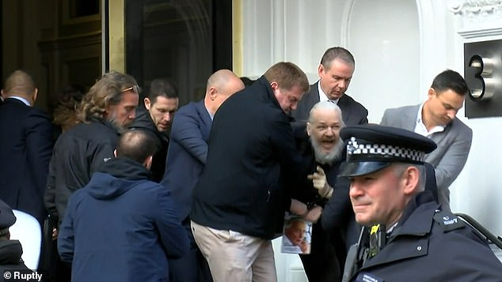
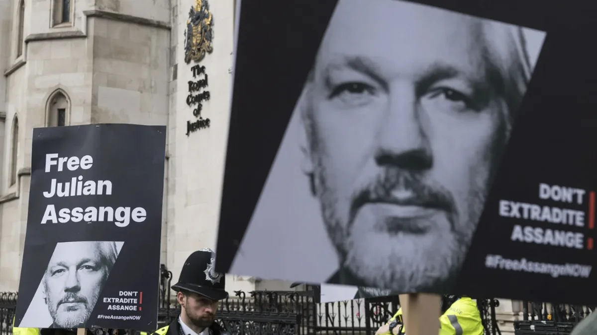

Persecucion y actualidad
La persecución de Julian Assange comenzó en 2010, después de que WikiLeaks publicara documentos secretos de las guerras de Irak y Afganistán. Ese mismo año Suecia emitió una orden de arresto en su contra por acusaciones de delitos sexuales, que él negó. Temiendo que su extradición a Suecia pudiera llevarlo posteriormente a Estados Unidos, en 2012 pidió asilo en la embajada de Ecuador en Londres. Permaneció allí casi siete años en condiciones muy difíciles, sin poder salir por el riesgo de arresto, y bajo constante vigilancia policial y mediática.
En 2019 el gobierno de Ecuador le retiró el asilo y la policía británica lo arrestó. Desde entonces está recluido en la prisión de máxima seguridad de Belmarsh, en Reino Unido. Allí ha enfrentado audiencias por su extradición a Estados Unidos, donde se le acusa de espionaje y de conspiración para obtener y publicar información clasificada. Si es extraditado y condenado, podría recibir una pena de hasta 175 años de prisión.
Actualmente (2025) su caso sigue abierto y es motivo de debate internacional. Diversas organizaciones de derechos humanos, periodistas y figuras políticas exigen su liberación, argumentando que su persecución es un ataque a la libertad de prensa y que su salud física y mental se ha deteriorado en prisión. Estados Unidos mantiene su solicitud de extradición, mientras que sus abogados buscan apelar y evitar que sea enviado.
